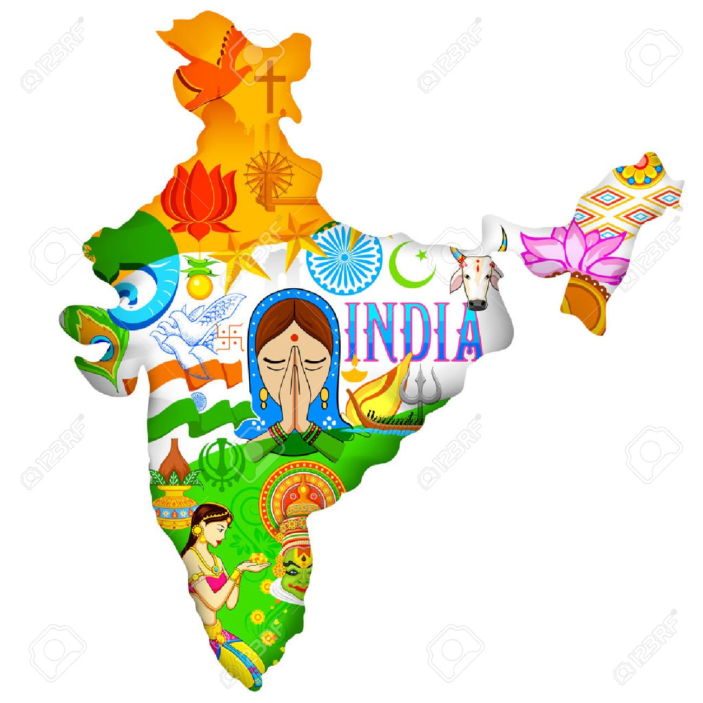

India is a great country where people speak different languages but the national language is Hindi. India is full of different castes, creeds, religion, and cultures but they live together. That is the reasons India is famous for the common saying of unity in diversity. India is the seventh largest country in the whole world.
India has the second-largest population in the world. India is also knowns as Bharat, Hindustan and sometimes Aryavart. It is surrounded by oceans from three sides which are Bay Of Bengal in the east, the Arabian Sea in the west and Indian oceans in the south. Tiger is the national animal of India. Peacock is the national bird of India. Mango is the national fruit of India. Jana Gana Mana is the national anthem of India. Vande Mataram is the national song of India. Hockey is the national sport of India. People of different religions such as Hinduism, Buddhism, Jainism, Sikhism, Islam, Christianity and Judaism lives together from ancient times. India is also rich in monuments, tombs, churches, historical buildings, temples, museums, scenic beauty, wildlife sanctuaries, places of architecture and many more. The great leaders and freedom fighters are from India.
The Indian Flag Has Tricolor
The first color that is uppermost color in the flag which is the saffron color, stands for purity. The second color i.e. the middle color in the flag is the white color and it stands for peace. The third color that is the lowest color in the flag is the green color and it stands for fertility. The white color has an Ashoka Chakra of blue color on it. Ashoka Chakra contains twenty-four spokes which are equally divided. India has 29 states and 7 union territories.
Click Here for States and Capitals